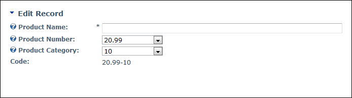
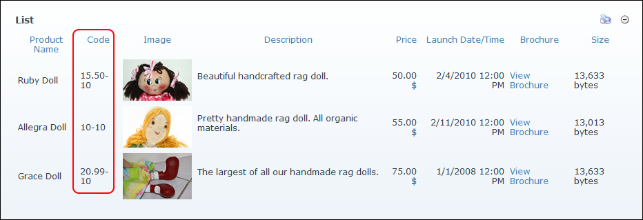

Setting a Calculated column
How to configure the optional Advanced Column Options for calculated columns for a form or list in the Form and List module. This topic assumes you are currently adding or editing a calculated column. See
Setting a Calculated column
Tip: In the above image, the columns of this list have been set so that users enter the Product Number and the Product Category data into separate fields, however the information is displayed as a truncated code on the list by using a Calculated Column.

The Calculated Column is displayed on the Edit Record page once it has been updated

The Calculated Column Displayed in a List